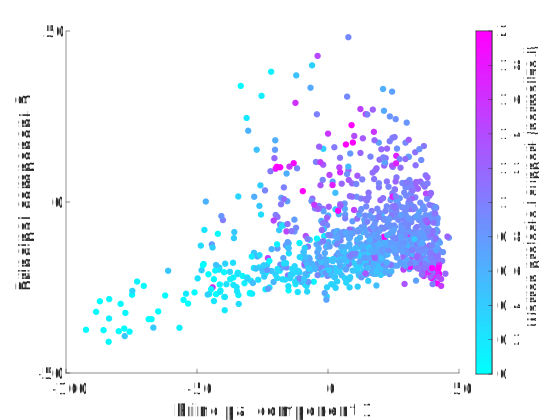

For the 2020 Democratic primaries, I have decided to predict results using a simple regression based on demographics. To accomplish this, I performed the following steps:
To test my model, I decided to predict the results in South Carolina using those from Iowa, New Hampshire and Nevada.
Prior to Super Tuesday, I made predictions and performed analysis on the model output. This included interpretations of patterns in candidate support as well as of my principal components.
Before I introduce my predictions, two important notes are necessary. Firstly, my model is only as good as its input. After performing regression to get candidate support as a function of demographics, normalized to a hypothetical baseline of support, I input the then-current polling numbers to get actual numerical predictions. Therefore, since the polls were off due to not having caught up with fast-moving events, so was my model. Secondly, both my predictions and my commentary are solely based on model output. I'm not attempting to put my thumb on the scale, and I'm definitely not attempting to inject personal views into any of this. I'm a mathematician, not a pundit. Having said that, I have included a county map of my Super Tuesday predictions below. Green is Sanders, blue is Biden, red is Warren and magenta is Bloomberg.

I'll also mention my delegate predictions before I get into the math:
- Alabama: Biden 30, Sanders 11, Bloomberg 11
- Arkansas: Biden 12, Sanders 9, Bloomberg 9, Warren 1
- Massachusetts: Sanders 37, Warren 32, Biden 18, Bloomberg 4
- Maine: Sanders 9, Bloomberg 6, Biden 5, Warren 4
- North Carolina: Biden 47, Sanders 35, Bloomberg 23, Warren 5
- Oklahoma: Biden 13, Sanders 12, Bloomberg 8, Warren 4
- Tennessee: Biden 25, Sanders 23, Bloomberg 15, Warren 1
- Vermont: Sanders 12, Warren 4
- Virginia: Biden 56, Sanders 22, Bloomberg 17, Warren 4
- In the other states, I wasn't able to finish calculating delegate apportionment before polls closed.
Since Bloomberg did not campaign in any of the states prior to Super Tuesday, my model treated him as a blank slate in terms of demographic patterns of support. This means that was predicted to do best in areas that didn't particularly fit in with the other major candidates' bases. On the map above, Bloomberg's county wins are in Mormon-heavy counties in rural Utah (where he is helped by a high polling average as of March 3), ski resorts in Colorado, Native American areas in Oklahoma and Minnesota, and a county in Texas (Coryell) that contains a large military population. All of these have their own statistical signatures in their demographics that for whatever reason didn't match with high levels of support for Sanders, Biden or Warren. In actuality, Bloomberg's support correlated quite well with the third principal component I used (see below). This meant that he did in fact do well in the ski counties, and he did better in rural compared to urban Utah, but the rest of the demographic outliers assigned to him didn't follow suit.
My model successfully predicted Biden's two main sources of support on Super Tuesday, namely counties with high values of principal components 2 and 3. I will visualize this, starting with an explanation of my principal components. When the first two principal components that I base my model on are plotted against each other for all 3142 counties in the United States, the result is a rather tidy-looking triangle:

The vertices of this triangle are Garfield County, Montana (high PC1), Jefferson County, Mississippi (low PC1, high PC2), and Starr County, Texas (low PC1, low PC2). In some ways, these represent the Platonic ideals of rural counties in the Midwest/northern Great Plains, Southeast, and Southwest, respectively. Distance from the second of these vertices correlates well with percent black population in a county.
Socioeconomic status is often a nebulous concept, typically based around income and education, and as a result it is hard to quantify. However, my third principal component seems to correlate very well with it. This can be attested to by a map of PC3 on a county level (below). Here, counties are shaded according to which quintile for PC3 they belong to (with red being low and green being high); additionally, the top 5% of counties are highlighted by being in a darker green than the rest of the top quintile. The highest counties are rich and well-educated, while the lowest are poor and mostly rural:

Plotting Biden's results as a function of PC2 and PC3 demonstrates his two main bases (high black population and high socioeconomic status). This shows up in the prediction map above, as well as in the actual results. For example, both the model and the eventual results had Biden sweeping every county in Alabama, and doing best in East Texas and West Tennessee. Additionally, the model correctly determined that Douglas County would be Biden's best in Colorado (disregarding a couple small rural counties with fewer than 100 votes cast each), and that he would do well in the Bay Area. The relationship that his support has with both PC2 and PC3 can be seen in this figure I created prior to making Super Tuesday predictions:

My model predicted support for Sanders fairly well, although it had room for improvement. Since the counties in the four pre-Super Tuesday states didn't cover the entire principal component space, part of the model's predictions were necessarily extrapolations. The model had Sanders doing extremely well in areas with low values of both PC1 and PC2 (anecdotally, these areas were generally rural and low-density with high Hispanic populations, with many in Texas). While these areas did give Sanders above average support, they were far from the predicted blowout wins. Prior to Super Tuesday, the model also found support for Sanders to be negatively correlated with PC3, which can be seen in this graph which plots PC1 and PC3:

This led to counterintuitive predictions such as Sanders doing very well in rural West Texas but poorly in Austin. It also led to an overstatement of his performance in rural Tennessee (although the model correctly viewed the mountains of East Tennessee as potentially his best area, as it did with similar areas in western North Carolina). The actual Super Tuesday results instead suggest that Sanders's support is less related to PC3 than the interface of PC3 and PC1, since many low PC3/high PC1 areas predicted for Sanders actually went to Biden, but some high PC3/low PC1 areas (Austin being one example) did the opposite.
The model identified Warren's bases of support almost perfectly. These were areas high in both PC1 and PC3 and low in PC6; most of the areas with the lowest values for PC6 contained college towns. For instance, in Minnesota, her best counties both in the model and reality were the suburban ones in the Twin Cities metro area (e.g. Dakota, Scott, Washington), while in Virginia she did relatively well in NoVa. The model also correctly predicted that her best county in North Carolina would be Orange. The correlation coefficients between predicted support for Warren in Super Tuesday counties and PC1 was 0.53, while that between Warren's predicted support and PC3 was 0.42. These were the two strongest correlations between support for any candidate and any of my first six principal components, and largely borne out by the results. Plotting Warren's predicted support as a function of PC1 and PC3 demonstrates this, as well as the differences between her support and Sanders's:

Super Tuesday gave me a large amount of data to work with. Using this, I predicted the results for the states voting on March 10.